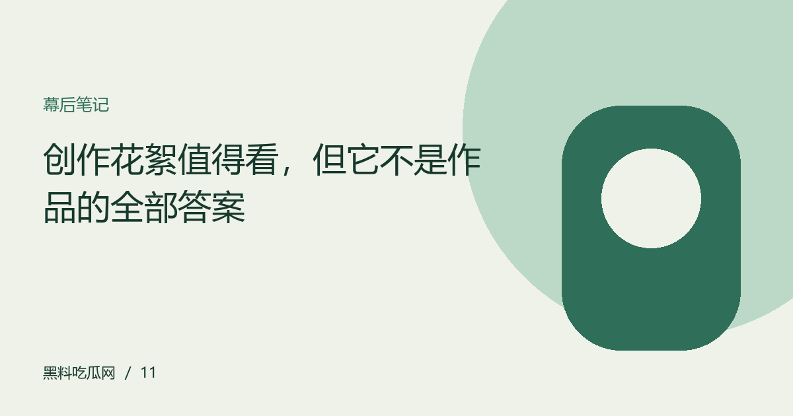

创作花絮值得看，但它不是作品的全部答案
花絮帮助理解过程，也经过编辑选择。把幕后记录、创作意图与观众体验并列，获得更立体的作品认识。

花絮给出了另一种观看入口
排练、准备与现场协作能够让观众看见成片之外的劳动，也可能帮助理解某个表达选择。但公开花絮本身仍经过选择与剪辑，不能视为全部工作记录。可以欣赏其中的过程，同时保留对缺失部分的认识。某个精彩片段证明这一刻被记录，不自动证明整个制作过程始终如此。
投入与效果是两个问题
创作者付出很多努力值得尊重，但观众仍可以根据公开作品评价完成效果。反过来，一项表达没有打动某个观众，也不能用来否定所有工作投入。把这两个层面分开，可以让幕后介绍与作品批评同时存在。讨论时用具体内容说明感受，比在努力与不努力之间作简单选择更有帮助。
公开署名比猜测更重要
花絮中出现的人未必承担观众想象的全部工作，未出镜的参与者也可能贡献重要。介绍团队时应查看公开署名与可靠说明，不从镜头多少推断地位。涉及工作关系或内部争议，更需要准确资料。幕后内容最有价值的部分，是帮助认识不同工种怎样协作，而不是提供推测私人关系的素材。
让过程资料补充而非规定感受
看过花絮后，观众可能更喜欢某段作品，也可能只是理解了意图而仍不认同效果。这些反应都可以成立。分享时说明自己新增了什么认识，不要求其他人因此改变评价。作品与过程之间的对话应扩大理解空间，而不是关闭讨论；拥有不同感受，也不意味着不尊重创作劳动。
编辑演示：本文用于展示专题阅读；虚构情境不构成真实人物或事件报道。
下一篇：建立一个不被热度牵着走的收藏夹 →